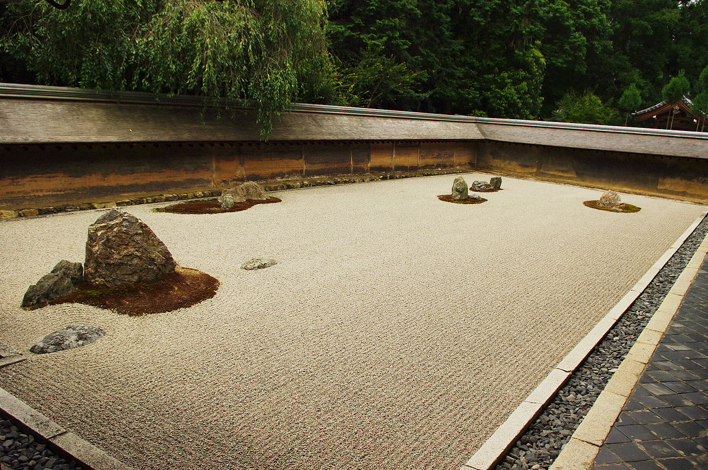
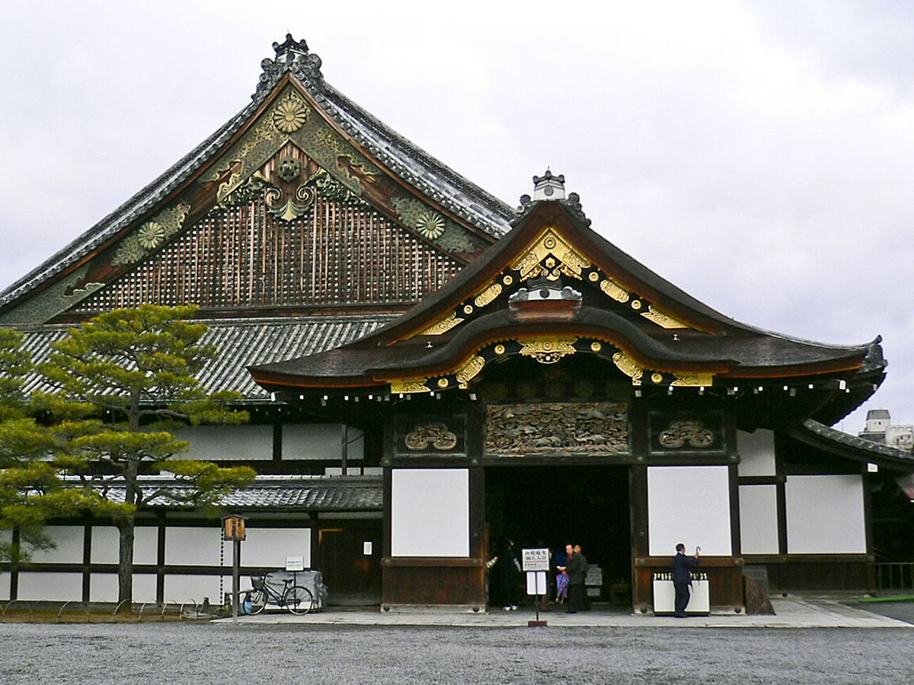

About Me
My name is Sandesh Subedi. I was born on July 5, 1994, in Nepal. I have a keen interest in the field of IT, which is why I am currently pursuing a master's degree at KCGI.
About Kyoto
Kinkakuji Temple
Kinkaku-ji, also known as the Golden Pavilion, is a Zen Buddhist temple in Kyoto, Japan.

Ryoanji Temple
Ryoan-ji is a Zen temple located in Kyoto and is famous for its rock garden, considered one of the finest examples of Japanese Zen gardens.
Tofukuji Temple
Tofuku-ji is a large Zen temple in Kyoto, known for its beautiful autumn foliage and the iconic Tsutenkyo Bridge.

Nijo Castle
Nijo Castle is a UNESCO World Heritage Site located in Kyoto, famous for its historic significance and stunning gardens.